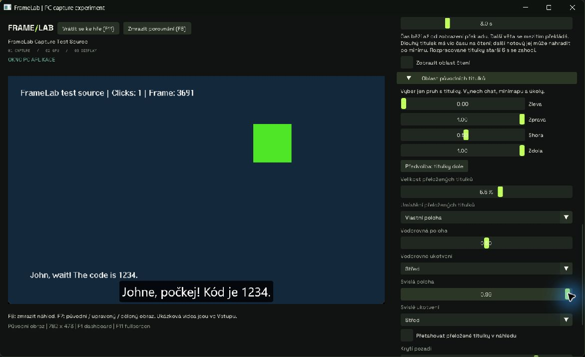

A console over the network.
Captions over your game.
Availability: window capture, subtitle-only mode and optional OpenAI API are included in public preview.18. API translation uses your own separately billed key; local models remain available. No physical console was available for this test; Remote Play steps follow the manufacturers' documentation.
PlayStation
Install PS Remote Play. Enable Remote Play on your PS5/PS4, connect a supported controller, sign into the same account on PC and select your console. Verify video, audio and controls before capturing its window. Network wake from rest mode needs its separate console settings. Sony's full instructions.
Xbox
Enable remote features on your Xbox Series X|S or Xbox One, then visit xbox.com/remoteplay in a supported PC browser. Sign in, connect a controller and start your console game. Use a dedicated browser window. Console setup · requirements.
Remote Play streams your own console; Cloud Gaming streams from the service and depends on account, region and subscription availability.
Capture the window
- Use windowed or borderless mode. Enable the game's original subtitles.
- In FrameLab, open Capture → PC game / application window → Refresh windows, then select the game, PS Remote Play or the dedicated Xbox browser window.
- For the processed picture, leave subtitle-only mode off, click Capture window, configure effects and choose Show output over game.
Mouse/keyboard input stays with the game, and audio stays with the source app. Ctrl+Alt+F11 opens settings. Switching to another app hides the overlay. Network compression and delay arrive before FrameLab; interpolation cannot remove them.
Subtitles over the original game
- Select the source window. Enable Only subtitles over the original window, then Capture window.
- In Subtitles, select source/target languages, OCR region and translation provider. Download the required local model if using offline translation.
- Position the translation below the OCR region or at a custom position. Disable covering the source if both texts should stay visible.
- Enable translation, then use Minimize settings and return to game. Return with Ctrl+Alt+F11 or the FrameLab taskbar icon. Stop with Stop window capture.
This mode captures at 5 FPS for OCR, suspends frame generation/enhancement, and restores their selection after capture stops. Text is rasterized at the source window's physical size. Local translation still uses its CPU/GPU; API translation leaves OCR, capture and overlay rendering on the PC. The workload is reduced, not zero. Minimized source windows pause capture; exclusive fullscreen is unsupported.
Optional OpenAI translation using your own key
- Create a key in your OpenAI API project; check API billing, credit and limits separately from your ChatGPT subscription.
- Choose Subtitles → Translation provider → OpenAI API / BYOK, paste the key in the masked field, then Save key securely.
- Click Refresh models from my account. Start with GPT-6 Luna + none, leaving temperature unset.
- Set OCR and languages, then explicitly enable paid API translation. New text can create billed requests. A short in-memory cache avoids repeats.
The key is stored in Windows Credential Manager for the current Windows user, outside the portable package. Removing it affects other FrameLab installations under that user; server-side revocation is done on the API platform.
Capabilities and privacy
The live model list does not provide parameter capabilities. Dated reviewed profiles determine valid reasoning/temperature combinations. Unknown IDs are displayed but disabled until reviewed. Temporary connection errors, HTTP 408/5xx and unusable replies skip a caption. Authentication, configuration and HTTP 429 rate/quota errors still require correction and manual restart; the same failed caption is not immediately retried.
Only recognized text and translation instructions are sent, never images or audio. store=false does not mean all provider logging is disabled. See OpenAI data controls, current model pricing, and the 500-caption results and cost ledger.
To return offline, disable translation, select Local / offline, then enable your local model again.
Preview.20: after setup, the saved supported model and key can start without refreshing the model list. Use Start OpenAI translation or Restart OpenAI translation in Subtitles. An explicit restart clears the current session/history. A temporary network/server error skips one caption; key, configuration and HTTP 429 rate/quota errors require correction and restart.
Preview.20: Maximum wait per subtitle (seconds) and Tokens per response default to 2 seconds / 1000 tokens on a fresh installation. The deadline covers all speaker blocks. After a timeout, the latest caption can continue without an ordinary worker restart or history reset. More output tokens do not enlarge the model context or guarantee a timely answer.
Troubleshooting
Black picture or missing source window
Restore the source window, verify its own playback and refresh the window list. Protected content or apps blocking capture may not expose a picture. FrameLab does not bypass those restrictions. Remote Play compatibility has not been physically verified here.
Wrong text, names or number plates are translated
Enable original subtitles, select the correct OCR language, narrow the region and sample the text appearance. Content filters can make mistakes. Check model/API status for missing files, quota or access errors.
I want image effects again
Stop capture, disable subtitle-only mode, restart capture and choose Show output over game. GPU compatibility requirements still apply.
Real screenshots, step by step
Captured from the local experimental build on an RTX 4050. The blue source is our test application, not Remote Play. These images show OCR, API translation, placement, minimizing and click-through; they do not prove console connectivity.


